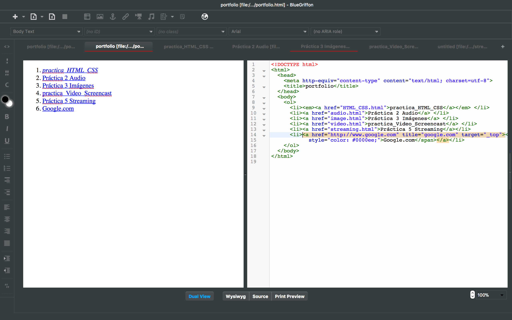

Publicar un documento HTML que contendrá los resultados de esta
exploración, para ello se hará uso de ficheros como los realizados por
el alumno en la tarea de presentación de la asignatura u otros con
licencia libre disponibles en Internet. El alumno deberá:
1.1. Almacenar el fichero en el directorio public_html de la
cuenta en el servidor de la asignatura y visualizar el fichero
anterior en el navegador a través de una URL al estilo de . El
nombre del fichero HTML lo elige el alumno.
Fig. 1.1 - public_html de la cuenta en el servidor.
1.2. Utilizar todos los iconos de la barra de formato y anotar qué
etiqueta o atributo se utiliza para llevar a cabo las opciones
disponibles.
Inline element
Emphasis
Strong emphasis
Code
Rgb
Bold
Italic
Underline
Unordered list
Ordered list
Define title
Define description
Align left
Align center
Align right
Align justified
Indent text
Outdent text
Encapsulate into a blockquote
1.3. Localizar y utilizar los iconos de la barra de iconos para
incluir un ejemplo de tabla, un enlace interno y uno externo,
ficheros de imágenes en mapa de bits, una imagen vectorial (SVG), un
fichero de audio y uno de vídeo (en los formatos que se acaba de
mencionar). Puede utilizar Online converter o cualquier otra
aplicación si quiere reutilizar el mismo archivo de audio o vídeo en
los diferentes formatos.
un ejemplo de tabla
Fig. 1.2 - Ejemplo de tabla.
un enlace interno y uno externo

Fig. 1.3 - Enlace interno y externo.
ficheros de imágenes en mapa de bits
Fig. 1.4 - Imágenes en mapa de bits.
una imagen vectorial (SVG)
un fichero de audio
Fig. 1.5 - Fichero de audio.
uno de vídeo
Fig. 1.6 - Uno de video.png.
Ejercicio 2
Sobre el documento realizado, realice las siguientes comprobaciones:
2.1. Valide el contenido del fichero HTML con Validate HTML que
utiliza el validador del W3C que se encuentra en la URL http://validator.w3.org/
2.1.1. Indique qué versión de HTML ha encontrado el validador que
hace el documento HTML valido o indique el numero de errores y
avisos (warnings) en caso de que los haya.
Fig. 2.1 - Numero de errores y warnings.
2.1.2. Si los hay, corrija solo los errores encontrados e indique
qué tipo de modificaciones han sido necesarias.
Fig. 2.2 - Corregir solo los errores.
2.2. Verifique que los enlaces contenidos en el documento apuntan
a un sitio web, que no están rotos.
Fig. 2.3 - Verificar los enlaces.
2.3. Utilice Information | View Page Information para anotar, si
estág disponible
2.3.1. El peso de la página.
Fig. 1.5 - El peso de la página.
2.3.2. La codificación de caracteres que se utiliza.
Fig. 2.4 - La codificación de caracteres.
2.3.3. Fecha de creación o modificación.
Resultado : Lo mismo del peso de la página
Ejercicio 3
Introducir aspectos de visualización mediante las opciones de
BlueGriffon en una hoja de estilos (CSS) externa al fichero HTML. Por
ejemplo, ha de declarar
3.1. Un tipo de letra, tamaño, color de fondo y color de letra
genéricos al elemento body.
3.2. Una imagen de fondo, un tipo y tamaño de letra distintos
para h1.
3.3. La alineación del texto a “justificado” para párrafos (p) y
“a la izquierda” con un sangrado de 10 píxeles para listas no
numeradas (ul).
3.4. Que los enlaces (a) se resalten en verde al pasar sobre ellos
y que se queden en amarillo después de ser visitados.
Fig. 3.1 - Hoja de estilos (CSS) externa.
Ejercicio 3’
Introduciendo estilos de la versión CSS3 que incorpora BlueGriffon,
se pueden generar ciertos efectos. Por ejemplo, ha de explorar y
utilizar los apartados de:
3'.1. Geométrico, para dar un espacio mayor entre párrafos.
Resultado : Puede ver al efecto del Geométrico entre los párrafos
en la figura de abajo.
3'.2. Bordes, para que los encabezados tengan una línea por encima
que los resalte sobre el texto y las dos esquinas superiores
redondeadas.
Fig. 3'.1 - Bordes.
3'.3. Columnas, para poner a tres columnas un trozo del documento.
Fig. 3'.2 - Columnas.
3'.4. Transformaciones, para incluir un párrafo rotado un ángulo de
30 grados
Fig. 3'.3 - Transformaciones.
Actividad 1
Validar el código CSS de los contenidos realizados en los ejercicios
2 y 3 utilizando la Web Developer:
1.1. Valide los estilos introducidos con Tools | Validate CSS y
con Tools | Validar Local CSS.
Fig. A1.1 - Validate CSS.Fig. A1.2 - Validar Local CSS.
1.2. ¿Se han observado diferencias entre las dos opciones?
Resultado : Sí. Ocurre un error cuando se usa. Valide el CSS
local. Pero no puedo saber por qué.
5.1. Descargue dos hojas de estilos de las allí propuestas como
alternativas, indicando cuáles ha escogido.
5.2. Incorpórelas al documento que ha venido realizando en los
ejercicios anteriores como CSS alternativas. Haga capturas de
pantalla del antes y el después de aplicar cada una de ellas.
Incorpórelas al documento
Fig. 5.1 - CSS alternativas.
Capturas de pantalla del antes
Fig. 5.2 - Pantalla del antes.
Capturas de pantalla del después_Modernist
Fig. 5.3 - Pantalla del después_Modernist.
Capturas de pantalla del después_Oldstyle
Fig. 5.4 - Pantalla del después_Oldstyle.
5.3. Explique si se ven cambios en el documento y a qué es debido.
Resultado : Sí, hay algunos cambios. Para hacer eso, tiene que
copiar y pegar algunos códigos sobre CSS en el documento HTML, en
particular, en la etiqueta principal.
Ejercicio 6
Realizar una hoja de estilos alternativa del estilo “media para
impresión” creándola cómo se muestra en la fig. 16 y que:
6.1. Genere una vista alternativa con únicamente colores blanco
(para el fondo del documento) y negro (para los tipos de letra).
6.2. Edite manualmente el contenido de esta hoja de estilo y copie
el siguiente fragmento de código CSS. ¿Qué efecto tiene este código
cuando se aplica esta hoja de estilo?
Resultado : Una vez que se descarga por archivo PDF, puede ver que
un texto más pequeño, que es un nombre de archivo vinculado, está
junto al texto del enlace original en el archivo PDF.
Fig. 6.1 - Efecto de este código.
6.3. Guarde una versión en PDF de la página que se está editando
para comprobar los cambios.
Ejercicio 7
Incorpore al documento cuatro conjuntos de media queries que definan
para el medio screen (descrito por “media para pantalla”), cuatro
escenarios en los que el color de fondo del documento (seleccione la
etiqueta body para ello) y el de los tipos de letra de todo el
documento cambie visiblemente.
Empiece definiendo uno de esos contextos seleccionando las condiciones
que lo definen, como muestra la fig. 17, utilizando el botón “Añadir
restricción” para concatenar varios valores de estas propiedades en un
solo escenario. Asigne valores a las propiedades y no olvide poner las
unidades “px” (píxeles) en el caso de los valores numéricos.
Se habrán de declarar estos cuatro casos y modificar, conforme se
indica, el valor de color de fondo:
screen and (min-width: 0px) and (max-width: 420px) → red.
screen and (min-width: 421px) and (max-width: 768px) → yellow.
screen and (min-width: 769px) and (max-width: 1024px) → green.
screen and (orientation: landscape) → pink.
7.1. Como respuesta a este ejercicio guarde un enlace a la versión
actual del documento y diga qué resultado se observa al
redimensionar la ventana del navegador y guarde capturas de la
ventana que lo muestren.
Resultado : Cuando se elige el CSS de los medios de pantalla, el
color de fondo de la página web cambia según el ancho del navegador
Firefox.Pero el color amarillo no solo se muestra porque, en primer
lugar, se aplicaría el retroceso del paisaje a la página web.
Fig. 7.1 - Cambia colores de la pantalla.
Actividad 2
La fig. 18 muestra un ejemplo de diseño de página web extraído del
trabajo de M. Pilgrim [5]- Descargar y comparar los ficheros
blog-html5.html y blog-original.html de los ejemplos que acompañan al
trabajo de Dive into HTML5 de http://diveintohtml5.info/examples/.
Publique, a partir de la versión HTML5 de estos ejemplos, en su
espacio de usuario, una página que sirva de banco de pruebas para el
porfolio y el trabajo de la asignatura. Para ello, modifique dos
apartados de la cabecera inicial del documento, de modo que recoja:
2.1. En los tres primeros enlaces de la cabecera, las respuestas a
los tres primeros ejercicios de esta misma práctica.
Fig. A2.1 - Versión HTML4.Fig. A2.2 - Versión HTML5.
Resultado : Para convertirse en HTML5, debe ser modificado que
sean las etiquetas de "!Doctype", "head" y "meta"
Fig. A2.3 - Corregir a la versión HTML5.
2.2. En el cuarto, los datos relativos a la propuesta de su
trabajo de asignatura con los datos que ha introducido en la tarea
correspondiente.
2.3. Incorpore un ejemplo de audio y uno de video, como los
empleados en el ejercicio 1, ampliados con el uso de la etiqueta
source para ofrecer alternativas que el navegador pueda mostrar y un
párrafo con un enlace al archivo de audio y el de vídeo,
respectivamente, para el caso de que no se puedan utilizar estas
versiones propuestas.